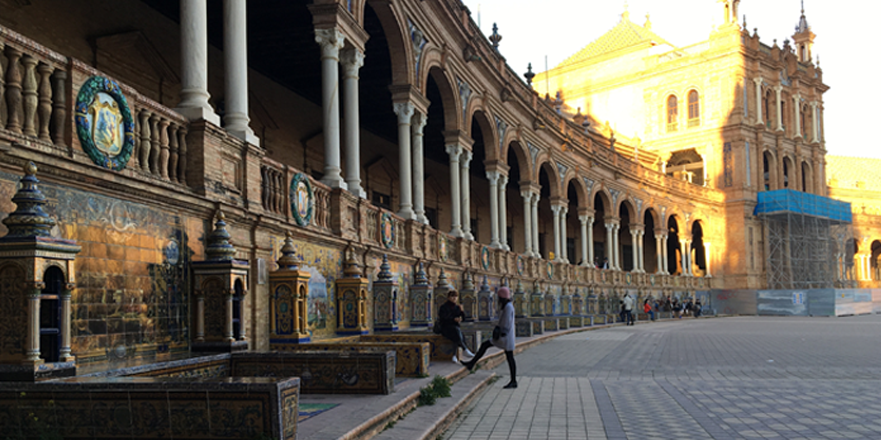
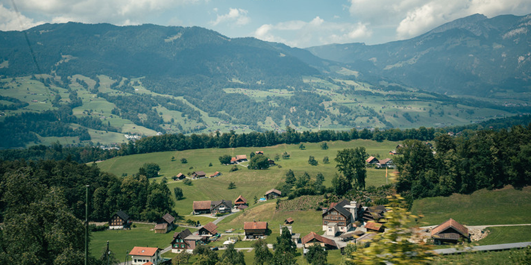
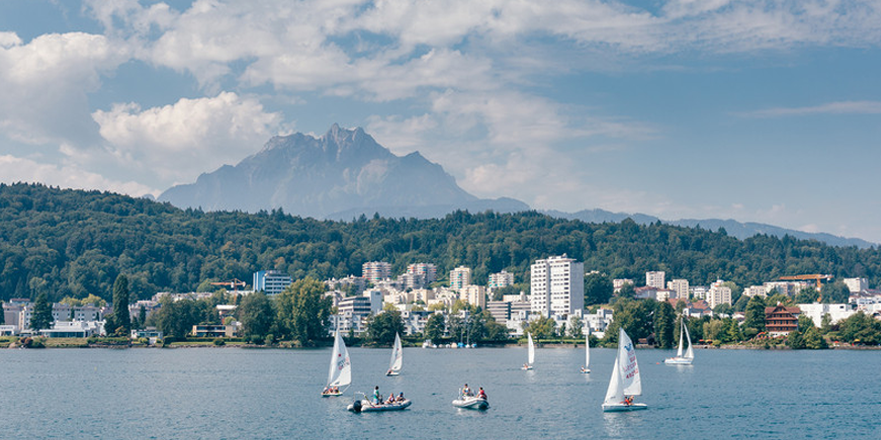

北京 • 158人去过发布时间：2018.10.23
北京 • 158人去过发布时间：2018.10.23“旅行，是一种心愿，是一种由未知而引发的美好憧憬。”为了实现我的心愿，我来到这个传说中的童话国度，带着我所有对美好的憧憬。如果说人间有天堂，我想那一定是在 瑞士 吧。这里有“风吹草低见牛羊”的悠闲惬意，也有“堆琼积玉几千叠”的壮阔雪山；静谧与繁华交错，自然与人文相融；真正来到 瑞士 ，你才会意识到这些词的丰满与鲜活；走过 瑞士 ，你才能理解，童话里不都是骗人的，美好可以真实存在。“旅行，是一种心愿，是一种由未知而引发的美好憧憬。”为了实现我的心愿，我来到这个传说中的童话国度，带着我所有对美好的憧憬。如果说人间有天堂，我想那一定是在 瑞士 吧。这里有“风吹草低见牛羊”的悠闲惬意，也有“堆琼积玉几千叠”的壮阔雪山；静谧与繁华交错，自然与人文相融；真正来到 瑞士 ，你才会意识到这些词的丰满与鲜活；走过 瑞士 ，你才能理解，童话里不都是骗人的，美好可以真实存在。
阿布扎比魅力四射的多元文化、动人心魄的奢华体验、惊险刺激的探险经历和阿拉伯人的热情好客等待您来发现。前往谢赫扎耶德大清真寺，惊叹于举世闻名的地标建筑，在阿布扎比法拉利世界体验全球速度最快的过山车，乘坐快艇穿梭于阿联酋首都的迷人海岸线，在阿哈弗拉滑沙时聆听大风的呼啸声，或漫步于艾恩清爽绿洲，尽享内心的平和与宁静。
您可以随意选择令人眼花缭乱的酒店和公寓，从著名的酋长皇宫酒店、亚斯总督酒店和凯悦首都门酒店，到令人兴奋的海岛/海滨度假村和沙漠营地。在市中心体验超现代的豪华设施，在亚斯岛体验家庭探险游或在萨迪亚特岛上感受奢华无比的世外桃源。
二刷琉森的湖光山色
“旅行，是一种心愿，是一种由未知而引发的美好憧憬。”为了实现我的心愿，我来到这个传说中的童话国度，带着我所有对美好的憧憬。如果说人间有天堂，我想那一定是在 瑞士 吧。这里有“风吹草低见牛羊”的悠闲惬意，也有“堆琼积玉几千叠”的壮阔雪山；静谧与繁华交错，自然与人文相融；真正来到 瑞士 ，你才会意识到这些词的丰满与鲜活；走过 瑞士 ，你才能理解，童话里不都是骗人的，美好可以真实存在。
  您的位置 >
您的位置 >